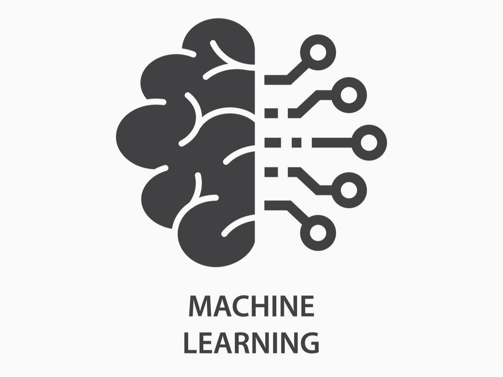

Participated in a robotics event where I built and showcased a line follower bot. It was an exciting hands-on experience that improved my skills in electronics, sensors, and Arduino programming. Looking forward to more such challenges!
My team won first prize at the Techtronix 2025 hackathon where our project focused on AI-powered rail-track inspection, combining machine learning and computer vision to enhance railway safety. Grateful for the experience and recognition!
I took part in a circuit designing event at Techtronix 2025, where I built a humidity and temperature monitoring system using Arduino and IoT. It was a great learning experience working with sensors and real-time data monitoring!
I recently designed the UI of a banking app using Figma as a project. From user flow to screen layouts, it was a great experience exploring UX principles and creating a clean, functional interface for digital banking.
I built a personal portfolio website using HTML and CSS to showcase my projects and skills. This project helped me strengthen my frontend development skills and understand the importance of responsive design and clean code for a better user experience.

Built two Machine Learning models: one predicts the probability of a heart disease given the data of patients and the other one predicts the price of a bulldozer given certain data about the bulldozer like the company, sale date, cost price etc.